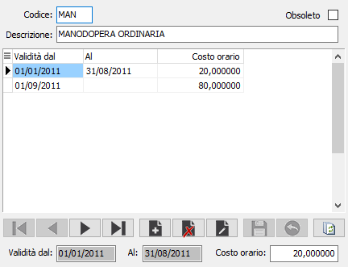
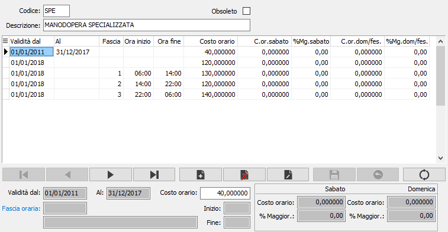

Tipologie attività operatori
La tabella consente di definire le varie tipologie di operatore da utilizzare per la definizione dei costi collegati alle risorse.

Per ciascun elemento della tabella è possibile definire il costo orario da applicare ed il periodo di validità; se la data di fine validità viene lasciata vuota il costo sarà valido sempre a partire dalla data di decorrenza fino a quando non sarà inserito un costo in una data successiva, alla decorrenza, allora il periodo precedente sarà chiuso automaticamente al giorno prima dell'inizio validità del nuovo costo.
Se è gestito in configurazione il costo operatori per fascia oraria la manutenzione delle tipologie cambia radicalmente:

Per ciascun elemento della tabella è possibile definire il costo orario da applicare ed il periodo di validità ed alla singola fascia oraria; se la data di fine validità viene lasciata vuota il costo sarà valido sempre a partire dalla data di decorrenza fino a quando non sarà inserito un costo in una data successiva, alla decorrenza, allora il periodo precedente sarà chiuso automaticamente al giorno prima dell'inizio validità del nuovo costo. Sono presenti anche i campi relativi al costo orario ed alla percentuale di maggiorazione sia per il giorno del sabato che per la domenica; i campi costo e percentuale sono alternativi l'uno all'altro e non possono essere valorizzati entrambi. Il record senza fascia oraria (fascia 0) derivante dalla gestione senza fascia oraria sarà utilizzato per la valorizzazione preventiva.
Il nuovo calcolo assegna il costo dell'operatore in base alla durata dell'evento ed alle fasce orarie assegnate alla tipologia di attività; l'attuale calcolo non viene effettuato se per un versamento sono presenti singoli eventi con tempo evento maggiore alle 24 ore. Se la valorizzazione per fascia oraria non riporta nessun valore il costo assegnato è quello derivante dal calcolo standard per risorsa, come la valorizzazione preventiva.
Se gestiti i costi per fascia oraria devono obbligatoriamente essere definite tutte le fasce dell'orario lavorativo per poter valorizzare tutte le ore di lavoro; se viene trovato il valore per fascia orario dell'orario di inizio valorizza solo i costi per fascia oraria, se presenti in ordine di orario, non effettuando il calcolo standard per risorsa anche se ci sono fasce orarie il cui costo non è definito.
Il nuovo calcolo viene applicato in fase di generazione versamenti e dalla consuntivazione, aggiornamento valore magazzino se richiesto di ricalcolare i versamenti.